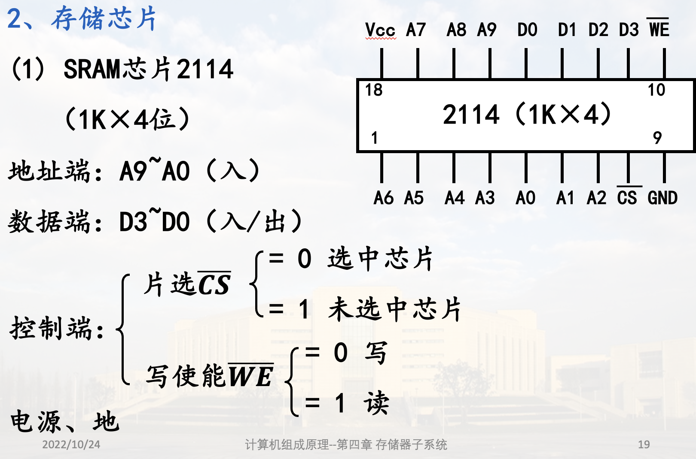
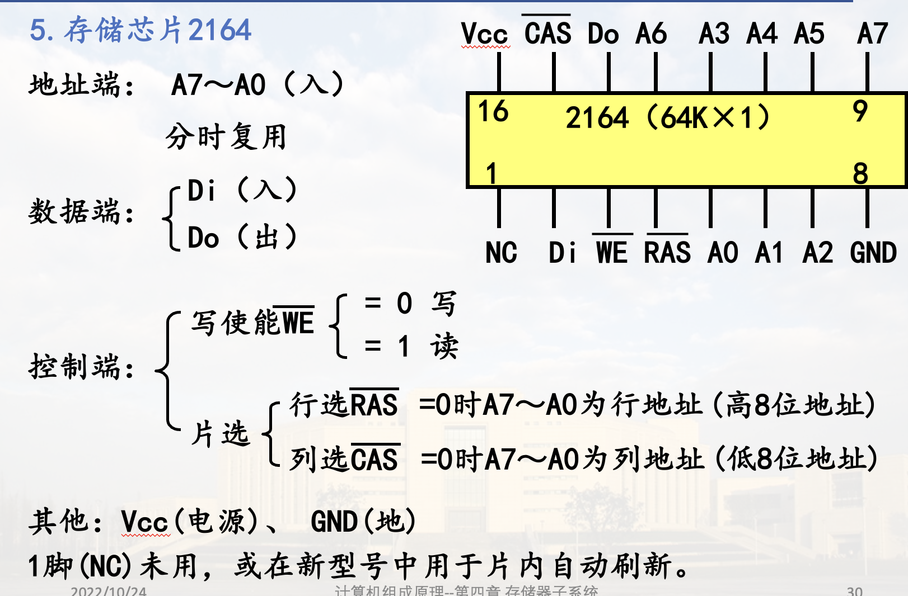

半导体存储原理
存储元
存储元: 能够表示一位二进制的"0"、"1"两种状态，且具有记忆功能的物理器件
存储单元: 若干存储元构成的一个存储单元
按信息存储原理分类
- 静态存储元SRAM(静态MOS型), 不需刷新
- 动态存储元DRAM(动态MOS型), 需要刷新
静态MOS存储元与芯片 (SRAM)
1. 六管单元电路结构(存储元)
依靠双稳态电路内部交叉反馈的机制存储信息

存0: 高电平, 低电平
存0: 低电平, 高电平
有VCC, 功耗较高
2. 存储芯片
(1) SRAM芯片2114

: 1K个编址单元, 每个4b
地址端: 接地址总线
数据端: 接数据总线
(2) SRAM芯片6264

动态MOS存储元与芯片 (DRAM)
1. 基本存储原理
依靠电容存储电荷的原理存储信息
2. 动态存储元刷新
电容存在泄漏通路，电容上的电荷通过泄漏电路放电，使存储的信息丢失
为此，每隔一定时间后就需要对存1的电容重新充电，称为刷新
3. 四管单元电路 (存储元)

无VCC, 功耗较低
0、1与W的关系同六管单元


4. 单管单元电路

 W预充电: 到C的高低电平之间
W预充电: 到C的高低电平之间
5. 存储芯片2164

分时复用: 两次地址数据传送一个地址